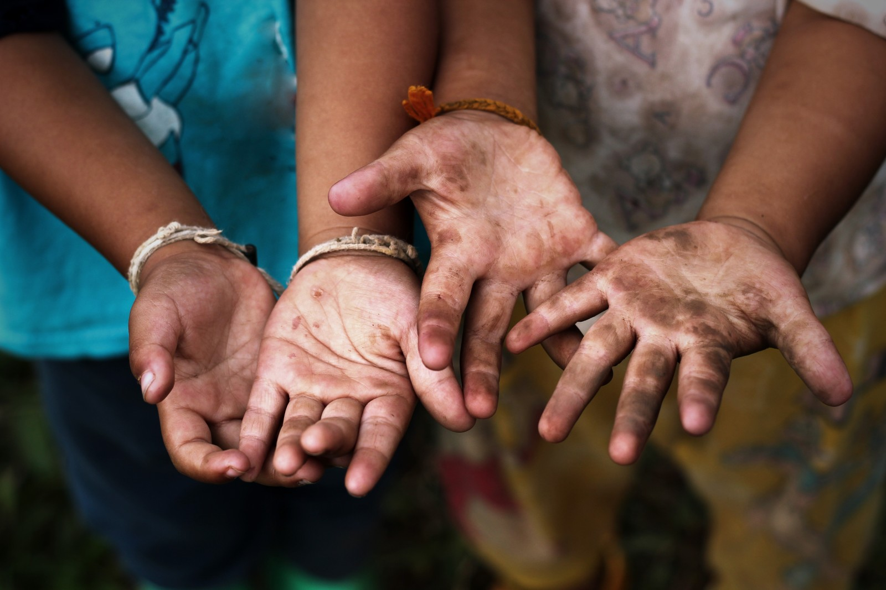
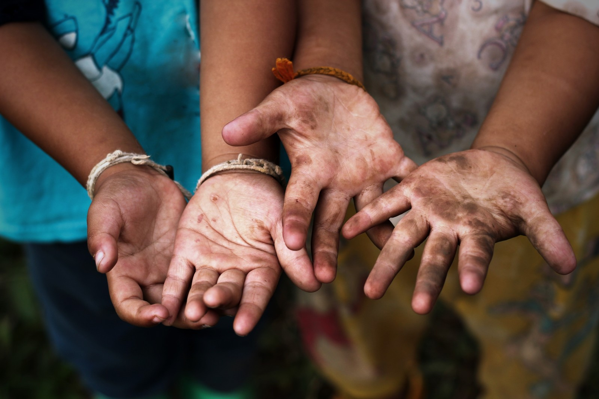

Trabalho Decente
Formalizado pela OIT (Organização Internacional do Trabalho) em 1999, o conceito de trabalho decente sintetiza a sua missão de promover oportunidades para que as pessoas obtenham um trabalho produtivo e de qualidade, em condições de liberdade, equidade, segurança e dignidade humanas, sendo considerado condição fundamental para a superação da pobreza, a redução das desigualdades sociais, a garantia da governabilidade democrática e o desenvolvimento sustentável.
Trata-se de um conceito central para o alcance dos Objetivos de Desenvolvimento Sustentável (ODS) definidos pelas Nações Unidas, em especial o ODS 8 , que busca “promover o crescimento econômico sustentado, inclusivo e sustentável, emprego pleno e produtivo e trabalho decente para todas e todos”.
Objetivos da OIT
- A promoção do emprego produtivo e de qualidade
- A ampliação da proteção social
- O fortalecimento do diálogo social
- O respeito aos direitos em todos os tipos de trabalho